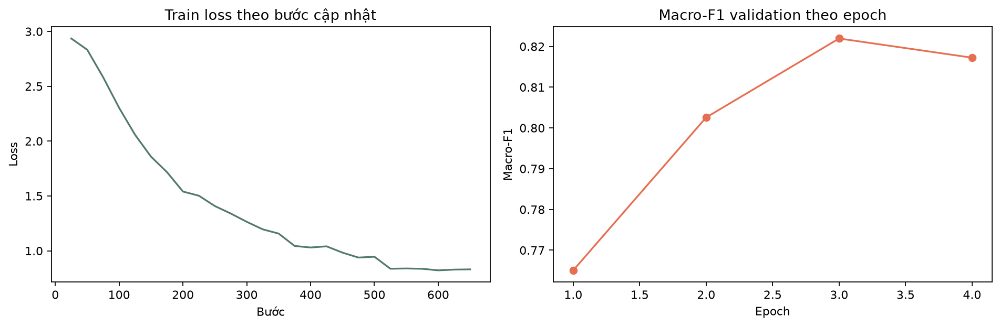
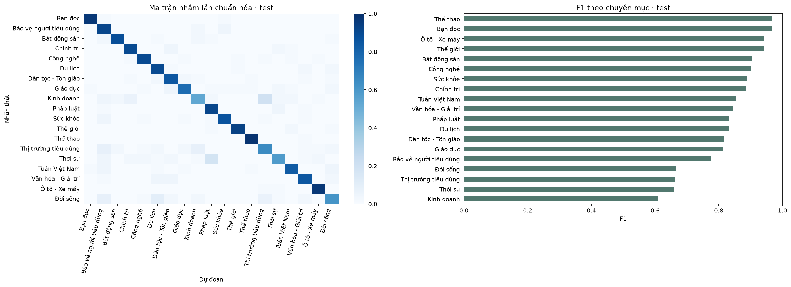

Vietnamese news classification
Classifying VietnamNet articles into 19 categories with PhoBERT, then examining how calibration changes confidence and prediction errors.
About the study
This study classifies Vietnamese news articles into 19 categories. It compares PhoBERT fine-tuned on the headline and article body with a headline-only baseline evaluated on the same article IDs.
Data collection
Huỳnh Thành Đạt crawled the corpus from a list of public VietnamNet article URLs. The published dataset records the source URL, category, headline and body. The notebook uses the checksum-verified Parquet snapshot so that the same articles can be used in each run.
VietnamNet · 7,600 sampled articles · 19 categories
The cohort has 400 articles per category. It is divided into 5,320 training, 1,140 validation and 1,140 independent test articles.
Dataset requirements
- At least 2,000 text samples.
- A Vietnamese-language dataset is encouraged for Vietnamese students.
- Self-collected data, including a corpus obtained through crawling, is valued by the assignment brief.
Source: course assignment brief v4.0, section 4.3. Language and self-collection are encouraged, not mandatory.
Article preparation and fine-tuning
The input combines the headline with up to 220 words from the beginning and 80 from the end of the body. PyVi segments Vietnamese words. Head–Tail tokenization retains information from both ends within PhoBERT's 256-token input.
PhoBERT Base v2 is fine-tuned for four epochs. Validation macro-F1 selects the checkpoint. The same validation partition determines the temperature and class thresholds before final evaluation on the independent test set.


Classification results
| Model and decision rule | Accuracy | Macro-F1 |
|---|---|---|
| Headlines · frozen PhoBERT and logistic regression | 77.54% | 0.7738 |
| Full articles · fine-tuned PhoBERT, argmax | 83.77% | 0.8353 |
| Full articles · validation calibration and class thresholds | 83.25% | 0.8296 |
The full-article model gains 6.23 percentage points in accuracy over the headline baseline. The comparison changes both the input and the training procedure.
What calibration changes
Temperature scaling reduced validation negative log-likelihood from 0.9739 to 0.6811. Applying the validation-fitted class thresholds reduced held-out accuracy from 83.77% to 83.25%. A better fit to validation confidence scores can coexist with weaker classification decisions on test.


Notebook and report
Data exploration, fresh PhoBERT training, validation, held-out evaluation and plots.
Methods, results and discussion, with the calibration procedure and its effects on individual categories.
The separate April 2026 Kaggle run used a larger corpus and reused its evaluation partition for calibration. Its notebook and evidence are archived.
CTG
Next assignment · 03